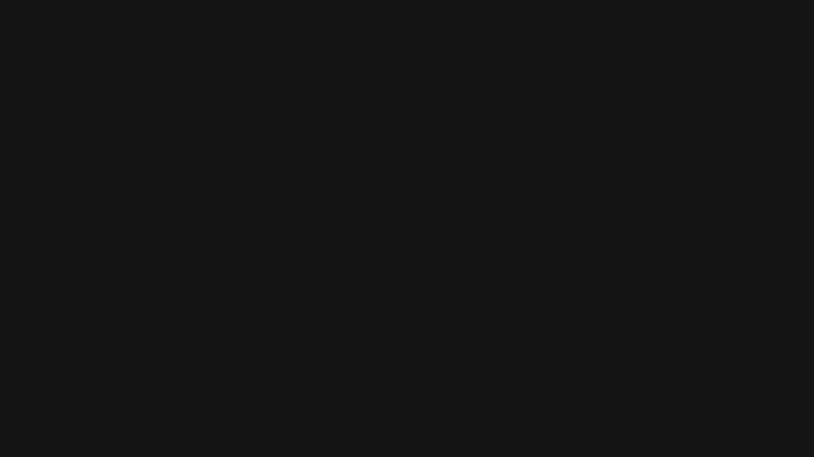

Rathmines, Dublin 6
Community first. Basketball second.
Last season
Both men’s teams won promotion. Two squads won a playoff.
Men’s Division 4
Up from Division 5, and winners of the Division 5 playoff.
Men’s Division 6
Up from Division 7.
Women’s Division 2
Winners of the Division 2 playoff. In Division 2 again this season.
Promotion is decided on final league position. The playoff is a separate tournament: the top four teams in a league go into a semi-final and a final.
The club
Three senior squads
Rathmines Basketball Club runs three senior teams: men’s Division 4, men’s Division 6 and women’s Division 2. Seniors only, no underage sides.
Nine home games per squad this season. See who plays.
Home venue
St. Mary’s College C.S.Sp.73–79 Lower Rathmines Road
Dublin 6
D06 HP38
New here?
Come and watch
Message the club on Instagram. Come and watch a game. Stay for a chat and a beer with the team afterwards.
That is the whole of it.
Instagram handle needed — link not live
This season
Fixtures
Dates are not confirmed by the league yet. The full fixture list is posted on the club’s Instagram.
Backed by
Our sponsors
- Blackbird
- Neighborhood Threat Barber
- Your logo here
Club merch
Wear the club
A short run of jerseys and tees, ordered together and picked up in Rathmines. Small batch, so when it is gone it is gone.